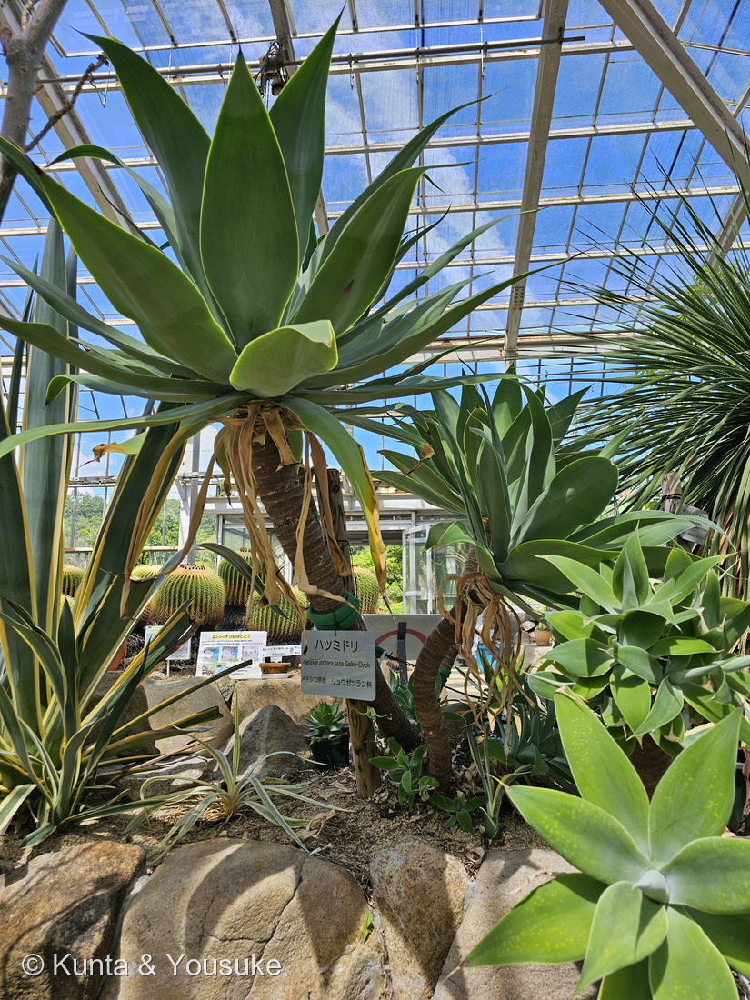
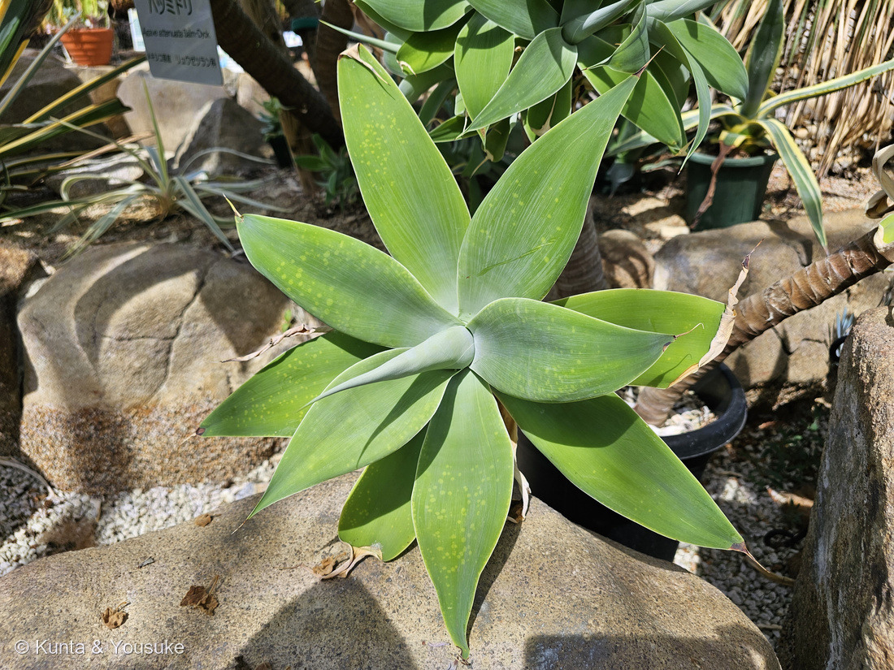

地図を読み込んでいるよ…
🔍 写真も地図も、押しているあいだ拡大して見られるよ（スマホは指を置いてすこし待ってね）。
🌍 の地図＝この子がもともと自生している場所を緑に。メキシコ中部〜南西部（ハリスコ州、ミチョアカン州、ドゥランゴ州など）の標高400〜2,500mの土地。⚠IUCNは軽度懸念（Least Concern）だが、野生ではまれとされる。園の名札は「メキシコ原産」。
⭐メキシコの子だよ。英語版Wikipediaは「メキシコ中部から南西部（ハリスコ州、ミチョアカン州、ドゥランゴ州など）の標高400〜2,500mの土地」とし、広島市植物公園の名札は「メキシコ原産」と書いていた。⚠地図はメキシコを国ごと塗ってあるけれど、ほんとうはもっとせまい──⭐太平洋側の、そこそこ標高のある山地だよ。⭐⭐おもしろいのは、この子の立ち位置＝IUCNでは軽度懸念（Least Concern）なのに、「野生ではまれ」とも書かれている（英語版Wikipedia）──⭐庭やベランダにはあふれているのに、山ではあまり見かけない子。⭐⭐⭐きのう登録した218 キンシャチと、じつは同じ国の子——⚠あちらはダムで自生地の大半が沈んで絶滅危惧。こちらは軽度懸念。⭐同じメキシコの乾いた土地から来て、ふるさとでの立場はずいぶんちがうんだね。⭐日本は塗っていない──会えるのは植物園と、お店の鉢の中だけだよ。
⚠ 地図は国（日本と中国だけ県・省）までしか塗れないから、ほんとうの分布より広く見えていることがあるよ。地図はだいたいの場所。正確なところは、上の文を見てね。
ハツミドリ（初翠）
Agave attenuata Salm-Dyck
英名 foxtail agave（キツネの尾）／lion's tail（ライオンの尾）／swan's neck agave（白鳥の首）／soft-leaf agave（やわらかい葉のアガベ）
キジカクシ科 · Asparagaceae（リュウゼツラン亜科・リュウゼツラン属 Agave）── 141 トックリランに続いて2人目のリュウゼツラン亜科。⚠園の名札は旧分類の「リュウゼツラン科」
燻太さんの一言「刺さりそうなほど尖った新芽に、鮮やかな緑。光合成をする気が満々の子だね。うちの子のエケベリアを、そのまま巨大にしたかのような出で立ち。でも、リュウゼツラン科ならベンケイソウ科のエケベリアとは遠い子だね」── ⭐遠いどころじゃなかったよ。そして、じつは刺さらないんだ
⭐⭐⭐ 名前と学名の由来 ── 「初翠」と「高貴なもの」
- ⭐⭐和名「ハツミドリ（初翠）」。——「翠」はカワセミの羽のような、あざやかな青みどり。⭐燻太さんの「鮮やかな緑」が、そのまま名前になっている子だね。（⚠由来をはっきり書いた出典には当たれなかったので、字の意味から読んだだけだよ。）
- ⭐⭐⭐属名 Agave は、古代ギリシャ語の agauê＝「輝かしい・高貴な」から（英語版Wikipedia）。⭐そして英語版は、その名が「その多くの種に見られる、とても高い花茎」にちなむ、と書いている。⭐⭐背の高い花のすがたを「高貴」と呼んだんだ。
- ⭐種小名 attenuata は「細く尖った」（英語版Wikipedia「with a narrow point」＝葉のかたちから）。
- ⭐命名者の Salm-Dyck は、19世紀ドイツの多肉植物の大家、ザルム＝ディック侯爵。⭐園の名札には、その名前までちゃんと書いてあったよ。
- ⭐⭐英名がどれも「やわらかいもの」の名前。——foxtail agave（キツネの尾）／lion's tail（ライオンの尾）／swan's neck agave（白鳥の首）／soft-leaf agave（やわらかい葉のアガベ）（英語版Wikipedia）。⭐あとの節で、この名前が効いてくるよ。
この植物のこと ── 141トックリランに続く、2人目のリュウゼツラン亜科
- キジカクシ科リュウゼツラン亜科の多肉植物。⭐141 トックリランに続いて2人目のリュウゼツラン亜科だよ。
- ⚠⚠園の名札は「リュウゼツラン科」。——⭐これは古い分類で、いまはキジカクシ科（Asparagaceae）のリュウゼツラン亜科にまとめられている（141のページと同じ書き方にしたよ）。⭐きのうの218 キンシャチも「名札は旧い学名」だった——⭐⭐名札は、その園がつけた時代の分類を、そのまま残しているんだね。
- ⭐⭐アガベは一生に一度しか咲かない。英語版Wikipediaはこう書いている ── 「Most Agave species are more accurately described as monocarpic rosettes or multiannuals, since each individual rosette flowers only once and then dies.（アガベの多くは一回結実性のロゼットで、ひとつのロゼットは一度だけ咲いて、そして死ぬ）」⭐そのかわり、根もとから子株（吸枝）が出て、あとを継ぐ。
- ⭐⭐⭐「センチュリープラント（100年の草）」という呼び名は、そこから来ている。⚠でも100年もかからない——英語版Wikipediaは「花が咲くまでの年数は、株の勢い、土の豊かさ、気候によってちがう」とし、種によっては60年かかるものもある、とする。
- ⭐⭐ハツミドリの花は、まっすぐ立たない。——「花序はすこし立ち上がったあと、重みで下がってきて、弓なりの『白鳥の首』や『キツネの尾』のような姿になる」（英語版Wikipedia）。⭐だから、あの英名たちなんだ。⏳いつか見たいね。⚠でも、それを見たときは、この株の一生の終わりでもある。
同定について ── 名札と株が、同じ画面にいた
- ⭐⭐園の名札に「ハツミドリ／Agave attenuata Salm-Dyck／メキシコ原産／リュウゼツラン科」とあり、その名札と株が同じ写真に写っている。⭐だから種まで書けるよ（217 ウツボカズラ・218 キンシャチと同じ決め手だね）。
- ⭐⭐⭐今回は、名札を写したまま公開している。——燻太さんがこう決めてくれたから：「この子は株全体を写したいから、園内の看板が画像に入っていても大丈夫だよ。看板を避けようとするとかえって全体が見えにくくなる場合は、そのまま写す判断をしてもいい」。⭐200で決めた「名札は公開しない」の運用が、ここで一段やわらいだ。⭐⭐株ぜんたいを見せることのほうが大事な子には、この形をとるね。
- ⭐決め手はもうひとつある。——この種は葉の縁に歯が無く、先にも鋭い刺が無い（下の節）。⭐ほかのアガベとは、ここではっきりちがうよ。
⭐⭐⭐⭐ 燻太さんの見立てに答えるよ
① 「刺さりそうなほど尖った新芽」 ── じつは、痛くないんだ
⭐⭐⭐ これがこの子のいちばん面白いところ。英語版Wikipediaは、はっきりこう書いている。
「There are neither teeth, nor terminal spines.（歯も、先端の刺も、無い）」
- ⭐⭐アガベといえば、ふつうは葉の縁にびっしり歯が並び、葉の先に硬く鋭い刺がある。⭐おまけのアオノリュウゼツランが、まさにそれ。
- ⭐⭐⭐でもハツミドリは、その両方を持っていない。——英語版Wikipediaは「leaves taper to soft points（葉はやわらかい先へと細くなる）」とし、さらに⭐⭐「making it an ideal plant for areas adjacent to footpaths（だから歩道のわきに植えるのに理想的な植物になっている）」と書いている。
- ⭐つまり、あの「刺さりそうな新芽」は、見た目だけ。⏳次に行ったら、園の人に聞いて、そっとさわらせてもらおうね。
- ⭐⭐英名がぜんぶ「やわらかいもの」だったのも、これで納得。——キツネの尾、ライオンの尾、白鳥の首、やわらかい葉のアガベ。⭐どれも、ふわりとしたものの名前だ。
② 「光合成をする気が満々の子だね」
- ⭐⭐⭐ぼくも、そう思う。そして①とつなげると、もっと面白くなるんだ。
- ⭐ほかのアガベは、葉の縁と先を武器にしている。⭐⭐歯も刺も、草食動物に食べられないための守り。
- ⭐⭐⭐ハツミドリは、その装備を持っていない。⭐そのかわり、葉は幅広く、平たく、なめらかで、まっすぐ光のほうへ広がっている。
- ⭐⭐写真②を見て。——若い株を真上から見ると、葉が中心からきれいに放射状にならんで、どの葉も重なりすぎないようにひらいている。⭐上から降ってくる光を、みんなで分けあう形。
- ⚠「守りを捨てて光に振った」と言い切れる出典は、ぼくには見つけられなかった。⭐だから、ここは燻太さんとぼくの「そう見える」という話。⭐⭐でも、同じ属のなかでこの子だけが刺を持たない、というのは事実だよ。
③ 「エケベリアを、そのまま巨大にしたかのよう。でもエケベリアとは遠い子だね」
- ⭐⭐⭐⭐燻太さん、これ、遠いどころじゃなかった。
- ⭐018 エケベリアはベンケイソウ科（Crassulaceae）——この図鑑の系統マップではバラ類／ユキノシタ目にいる。
- ⭐ハツミドリはキジカクシ科リュウゼツラン亜科——単子葉類／キジカクシ目。
- ⭐⭐⭐⭐つまり、この二人は単子葉類と双子葉類に分かれている。——被子植物のいちばん大きな分かれ目の、両側なんだ。⭐ススキとサクラくらい、遠い。
- ⭐⭐⭐それなのに、まんなかから葉が放射状にひらく、ぶあつい多肉のロゼットという、同じ形になっている。⭐これがこの図鑑でいう「他人の空似（収れん）」だよ。
- ⭐⭐見分けかたを、ひとつ。——⭐葉脈を見てみて。⭐⭐ハツミドリの葉には、たてすじが何本もまっすぐ走っている（写真②）。⭐単子葉類の平行脈だね。⚠エケベリアの葉は、脈がほとんど見えないくらい厚くて、なめらか。
- ⭐燻太さんは「科がちがうから遠い」と言ったけれど、ほんとうは科より、ずっと上のところで分かれていた。⭐⭐見立てが当たっていて、しかも当たり方が予想より大きかった、という回だね。
参考：Wikipedia (English)・Agave attenuata（There are neither teeth, nor terminal spines／leaves taper to soft points／making it an ideal plant for areas adjacent to footpaths／foxtail agave, lion's tail agave, swan's neck agave, soft-leaf agave／the inflorescence rises slightly before gravity brings it back down, giving the bloom a curved, "swan"-like or "foxtail" look／monocarpic — the entire rosette morphs into the giant inflorescence and dies／central and southwestern Mexico (Jalisco, Michoacán, Durango), 400–2,500 m／Least Concern (IUCN) though rare in the wild／attenuata means "with a narrow point"）／Wikipedia (English)・Agave（Most Agave species are more accurately described as monocarpic rosettes or multiannuals, since each individual rosette flowers only once and then dies／rhizomatous suckers develop above the roots／The number of years before flowering occurs depends on the vigor of the individual plant, the richness of the soil, and the climate／the name derives from Ancient Greek agauê, meaning "illustrious, noble", referring to the very tall flower spikes）／⭐広島市植物公園の名札「ハツミドリ／Agave attenuata Salm-Dyck／メキシコ原産／リュウゼツラン科」（⭐今回は燻太さんの判断で、名札が画面に入ったまま公開している）